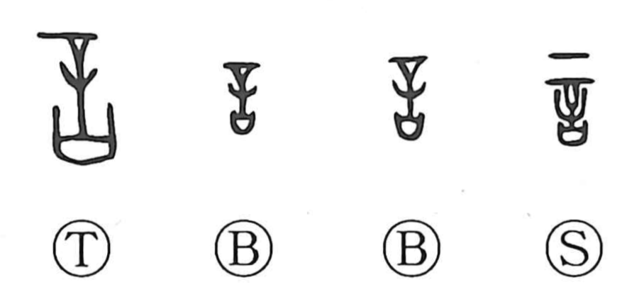

言

Kun: iu, koto, kotoba | On: gen, gon
to say ・ words ・ speech ・ language
Explanation
In its old form, this compound graph sets 辛—the handled awl used for punitive tattooing—above a square vessel 口 that served as a covenant receptacle holding written petitions to the gods. The image shows the branding needle poised over the covenant vessel as one utters an oath, invoking that punishment if the oath is broken. From this ritual scene the character first meant solemn words addressed to the gods, and by extension came to mean to say, words, and speech in general.